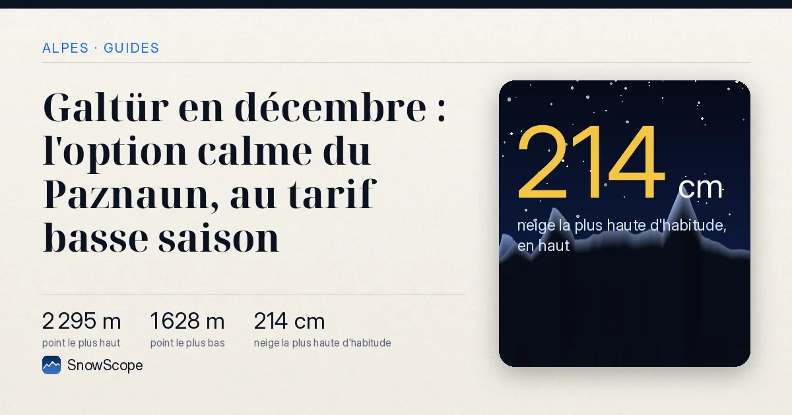

Galtür en décembre : l'option calme du Paznaun, au tarif basse saison
Galtür est située à l'extrémité calme de la vallée de Paznaun. Le 15 décembre type, le mi-versant affiche 55 cm et le sommet atteint 73 cm. Le forfait journalier basse saison coûte 55,50 EUR jusqu'au 18 décembre, ce qui en fait l'une des semaines les moins chères d'une station tyrolienne d'altitude.
Consultez les prévisions neige en temps réel pour Galtür sur l'application SnowScopeHauteurs de neige, alertes poudreuse et carte 3D, gratuitement.
Neige en décembre : mieux qu'on ne le pense
Les skieurs négligent souvent Galtür en la voyant comme une petite station familiale sans vraie neige. Les données de 46 hivers racontent une histoire différente pour décembre. Au mi-versant (1961 m), 93 % des hivers affichaient 30 cm ou plus la semaine du 15–21 décembre, et 96 % en tenaient 30 cm à la semaine de Noël. Au sommet (2295 m), ces chiffres atteignent 98 % et 100 %.
La base à 1628 m met plus de temps à se constituer : seuls 54 % des hivers affichaient 30 cm la première semaine de décembre. Le jour habituel du premier manteau solide à la base est le 28 novembre. Mais à partir de mi-décembre, la base s'affermit aussi. À la semaine de Noël, 85 % des hivers affichaient 30 cm ou plus à la base.


Épaisseur au fil du mois
Le 15 décembre type apporte 40 cm à la base, 55 cm au mi-versant et 73 cm au sommet. Le 24 décembre, ces chiffres passent à 54 cm, 74 cm et 88 cm. Le motif se maintient sur presque tous les hivers enregistrés : sur aucun des 46 la base n'était à nu le 15 décembre.
La semaine de Noël est quand l'épaisseur culmine partout. Le mi-versant affiche habituellement 30 cm ou plus dans 96 % des hivers cette semaine-là, et 60 cm ou plus dans 67 %. Au sommet, 100 % des hivers affichaient 30 cm ou plus, et 83 % tenaient 60 cm ou plus en profondeur—une vraie neige de ski.
La fenêtre basse saison
La station ouvre le 4 décembre 2026. La basse saison court jusqu'au 18 décembre, avec un forfait journalier à 55,50 EUR et un forfait 6 jours à 258 EUR. À partir du 19 décembre, les prix montent à 58,50 EUR et 286,50 EUR. Pour une semaine à mi-décembre, vous économisez 30 EUR sur un forfait 6 jours en arrivant tôt.
Ce sont parmi les prix les plus bas pour une station tyrolienne d'altitude. L'épaisseur de neige ne souffre pas du tarif réduit : les probabilités de neige au mi-versant en deuxième moitié de décembre sont identiques que vous payiez basse ou haute saison.
Comparaison avec Obertauern
Obertauern, à 50 km au sud en Salzbourg, s'élève à la même base de 1628 m et couvre beaucoup plus de terrain : 87 km de pistes tracées contre les 27 km de Galtür. Mais la neige de décembre d'Obertauern est légèrement moins fiable. Son mi-versant (1962 m) affiche 43 cm le 15 décembre type, et seuls 80 % des hivers affichaient 30 cm la semaine du 15–21 décembre, comparé aux 93 % de Galtür.
Le forfait 6 jours basse saison d'Obertauern coûte 331 EUR—73 EUR de plus que les 258 EUR de Galtür. Choisissez Obertauern si vous cherchez la taille et l'ambiance de village. Choisissez Galtür si vous valorisez une semaine tranquille, moins chère et avec des probabilités décembrales légèrement meilleures.
Ce qu'il faut savoir avant de réserver
Galtür est petite : 9 remontées et 27 km de pistes. Les skieurs avec une semaine complète pourraient épuiser le terrain et vouloir une journée dans les stations plus grandes de Paznaun. Prévoyez en conséquence ou associez votre semaine à une zone voisine.
La vallée de Paznaun s'étire au bout d'une longue route qui peut fermer pour le contrôle d'avalanches après les fortes chutes. Après une grosse neige, prévoyez un jour de tampon avant ou après votre séjour. Consultez le bulletin d'avalanches du Tyrol (lawinen.report) chaque matin avant de skier hors-piste.
Conseils aux skieurs
- Réservez votre semaine entre le 4 et le 18 décembre pour verrouiller le forfait 6 jours basse saison à 258 EUR.
- Arrivez à partir du 15 décembre pour trouver un manteau de base solide. Si vous venez tôt, restez au mi-versant ou plus haut jusqu'à l'arrivée typique du 28 novembre de 30 cm à la base.
- Attendez-vous à 73 cm au sommet le 15 décembre et 88 cm le 24 décembre ; les pentes supérieures offrent un ski régulier tout au long de la basse saison.
- Prévoyez un jour de tampon dans votre itinéraire : la route de la vallée peut fermer après une grosse neige. Vérifiez les conditions avant de voyager.
- Lisez le bulletin d'avalanches du Lawinenwarndienst Vorarlberg (lawinen.report) chaque matin si vous prévoyez de skier hors des pistes tracées.
À propos de ces chiffres
Les hauteurs de neige des stations sont la neige la plus épaisse sur le haut du domaine à la date indiquée ; ce sont des estimations pour une zone, pas une mesure en un point. Les prévisions peuvent changer. Consultez toujours le bulletin d'avalanche officiel avant le hors-piste.
Bulletins d'avalanche officiels: Lawinenwarndienst Vorarlberg
Citer ce bulletin
Pour la recherche, l'enseignement ou la presse : chiffres et graphiques réutilisables librement sous CC BY 4.0 avec cette citation.
SnowScope (2026), Galtür en décembre : l'option calme du Paznaun, au tarif basse saison, https://snowscope.app/blog/fr/2026/11/galtuer-december-skiing-quiet-paznaun-budget.html, consulté le 2026-11-14
SnowScope (Atlas Labs). (2026, November 14). Galtür en décembre : l'option calme du Paznaun, au tarif basse saison. SnowScope snow reports. https://snowscope.app/blog/fr/2026/11/galtuer-december-skiing-quiet-paznaun-budget.html
BibTeX
@misc{snowscope2026galtuerdecemberskiingqui,
author = {{SnowScope (Atlas Labs)}},
title = {Galtür en décembre : l'option calme du Paznaun, au tarif basse saison},
year = {2026},
month = nov,
howpublished = {\url{https://snowscope.app/blog/fr/2026/11/galtuer-december-skiing-quiet-paznaun-budget.html}},
note = {Published 2026-11-14 13:29 UTC; accessed 2026-11-14}
}· CC BY 4.0 · Méthodes, données et outils →
Galtür : neige et température selon l'altitude, cet hiver vs l'hiver dernier (outils) →
Suivre Galtür
Gratuit : un message quand la neige arrive, et la météo chaque matin.